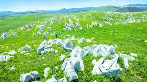
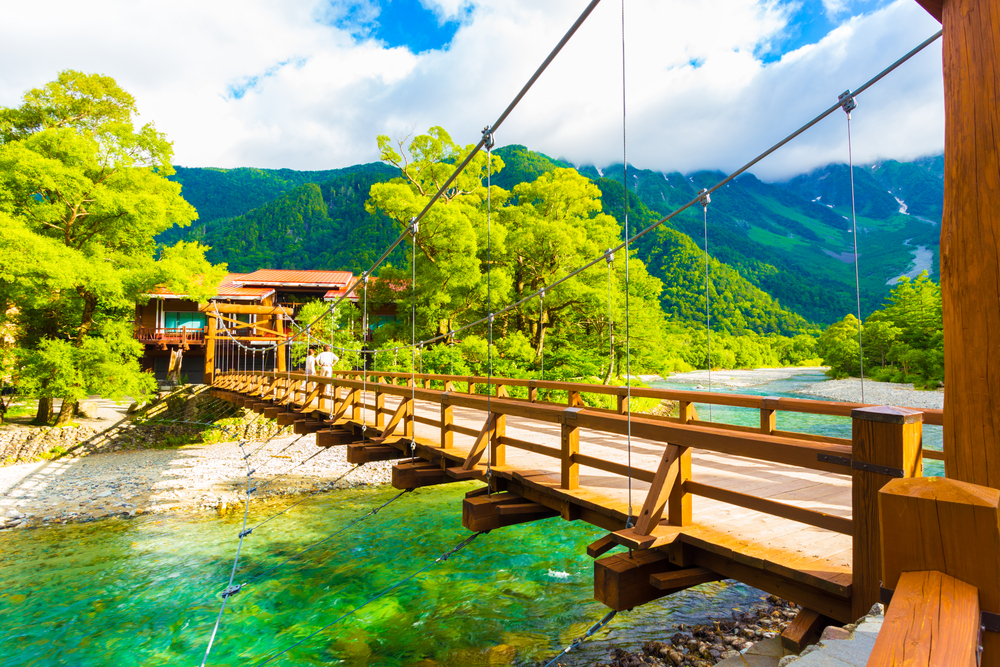
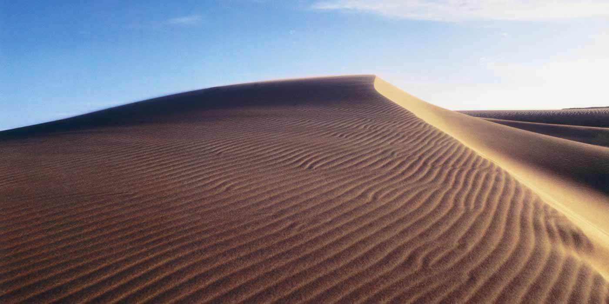
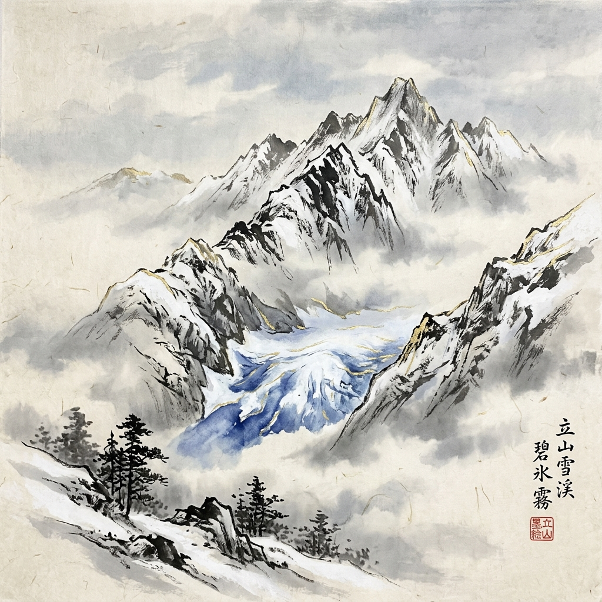

Weathering & Mass Wasting
Weathering in Japan
Japan experiences a lot of weathering because it has many mountains, frequent rainfall, and a humid climate. One common process is hydrolysis, where rainwater slowly breaks down rocks such as granite into softer soil. This type of soil is found in many parts of Japan and can become unstable during heavy rain.
Another important process is carbonation. Slightly acidic rainwater slowly dissolves limestone and creates caves and karst landscapes. A famous example is the Akiyoshidai Plateau in Yamaguchi Prefecture.
Because Japan has steep mountains and many storms, weathered soil and rock can easily move downhill. This often causes landslides, mudflows, and other types of mass wasting.

Major Event: The 2014 Hiroshima Landslides
One example of mass wasting happened in Hiroshima in August 2014. Heavy rainfall caused many landslides and debris flows in residential areas. More than 70 people lost their lives, and many homes were destroyed.
I learned that one reason the damage was so severe was because the slopes contained weathered granite soil. After absorbing large amounts of rainwater, the soil became unstable and collapsed.
Government Response and Sabo Dams
After events like the Hiroshima landslides, the Japanese government increased efforts to reduce landslide risks. Hazard maps were improved, warning systems were expanded, and more high-risk areas were monitored.
Japan also uses Sabo dams, which are special structures built in mountain valleys. They help slow down mud, rocks, and debris before they reach towns and roads. Together with retaining walls and drainage systems, these measures help protect people living in mountainous areas.
Water Erosion
Short, Steep, and Fast Rivers
Japan's rivers are generally short, steep, and fast because mountains cover much of the country. Heavy rainfall and typhoons make river erosion an important process in many regions. In my opinion, Japan's rivers show how closely mountains, weather, and daily life are connected.
Impact on Communities
River erosion can affect communities during periods of heavy rain and typhoons. Riverbanks may erode, sediment can be carried downstream, and flooding may damage homes, farmland, and roads. At the same time, rivers provide fresh water, support agriculture, and help generate hydroelectric power.

Profile of Japan's Major Hydrological Channels
| River System | Source Region | Total Length | Avg. Discharge | Estuary / Outlet | Channel Morphology | Primary Mitigation |
|---|---|---|---|---|---|---|
| Shinano River (Chikuma) | Mt. Kobushi (Chichibu Mountains) | 367 km (228 mi) - Longest | ~500 m³/s | Sea of Japan (Niigata Delta) | Straight upper gorges, meandering & braided lower reaches | Sekiya Diversion Channel, Ohzu flood bypass channel |
| Tone River ("Bandotaro") | Mt. Ominakami (Echigo Range) | 322 km (200 mi) | ~290 m³/s | Pacific Ocean (Choshi Estuary) | Highly engineered, artificial bends, historically meandering | Watarase Retarding Basin, super-levees, Edo-era channel diversion |
| Ishikari River | Mt. Ishikari (Daisetsuzan Range) | 268 km (167 mi) | ~480 m³/s | Sea of Japan (Ishikari Bay) | Historically highly meandering, now artificially straightened | Cut-off channel projects, wetland retarding areas, headwater Sabo dams |
Mitigation for River Erosion
The Japanese government uses levees, flood-control channels, riverbank reinforcement, and flood-retention basins to reduce erosion and flooding. These systems help protect nearby communities and manage excess water during major storms.
Wind Erosion & Aeolian Systems
Wind Erosion in Japan
Japan does not experience strong wind erosion compared to dry desert countries because it receives a large amount of rainfall throughout the year. Water erosion and landslides are generally much more significant.
However, wind erosion still occurs in some coastal areas where there is loose sand. The most famous example is the Tottori Sand Dunes, where strong coastal winds continuously move and reshape the sand. Although wind erosion is not a major hazard in Japan, it can affect coastal landscapes and nearby vegetation.
Government Mitigation
To reduce the effects of wind erosion, the Japanese government uses coastal forests, vegetation planting, and land management projects to stabilize sand and protect nearby communities.
These efforts help prevent sand movement, protect roads and farmland, and preserve important natural environments such as the Tottori Sand Dunes.

Deserts and Desertification
No True Deserts in Japan
Japan does not have any true deserts because the country receives a large amount of rainfall throughout the year. In fact, many parts of Japan receive much more precipitation than the amount normally associated with desert climates.
When I researched this topic, I learned that Japan is considered too wet to develop natural deserts. However, there are a few places that look similar to deserts and are often discussed when studying Japanese landforms.
Desertification in Japan
Desertification is not currently a major problem in Japan because of the country's humid climate and abundant rainfall. Instead of deserts expanding, some areas such as the Tottori Sand Dunes actually face the opposite challenge: plants and vegetation gradually grow over the sand.
To preserve these unique landscapes, local governments manage vegetation and protect the dune environment so that future generations can continue to enjoy them.
Glaciers
Glaciers in Japan
Japan has only a few active glaciers, and they are located in the Tateyama Mountain Range in Toyama Prefecture. For many years, people believed that Japan did not have any glaciers. However, researchers confirmed that several snow patches in Tateyama are actually moving glaciers and officially recognized them in 2012. These glaciers are considered some of the southernmost active glaciers in East Asia.
When I learned this, I was surprised because I always thought glaciers only existed in very cold places such as Alaska or the Himalayas. The heavy snowfall in the Japanese Alps allows glaciers to survive even in Japan.
Glacial Features and Their Impact
Although glaciers are limited to a few mountain areas, both modern and ancient glaciers have helped shape Japan's landscape. Glacial landforms such as cirques can still be seen in the Japanese Alps today. These features attract hikers, tourists, and researchers from around the country.
Glacial and snowmelt water also contributes to rivers and water resources in mountain regions. In addition, glaciers provide valuable information for scientists studying climate change and environmental conditions. While glaciers are not a major part of everyday life in Japan, they continue to influence tourism, scientific research, and mountain ecosystems.
